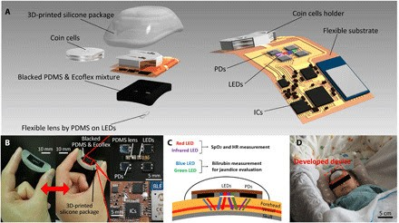

Funcionales: ¿Qué es lo que el diseño debe hacer?
- Medir la bilirrubina en el menor tiempo posible
- No ser invasivo
- Conocer propiedades espectrales de la piel
- Debe ser eficaz, exacto y preciso para la medición de bilirrubina
- Ayudar a detectar aumentos de bilirrubina y medir el riesgo de complicaciones
No funcionales: ¿Cuáles son las propiedades del diseño?
- Ser ergonómico.
- Ser portátil y de facil transporte
- Precio asequible
- Interfaz intuitiva
- Dar independencia parcial
- Adaptable y con disposicion a actualizarse
Contexto cientifico
Figura 1: Esquema conceptual del bilirrubinómetro portátil.(1)
Figura 2: Estructura del bilirrubinómetro portátil real(1)
Figura 3: Diagrama de sistema del dispositivo.(1)
Dispositivo portátil neonatal para la detección de ictericia en tiempo real basada en colorimetría con detección simultánea de signos vitales
En este estudio, se desarrolló un bilirrubinómetro portátil, liviano y de bajo costo que puede medir de manera no invasiva los niveles de bilirrubina en la frente de los recién nacidos y también evaluó su funcionalidad en los recién nacidos. Además, se agregó la capacidad de medir la frecuencia cardíaca y la saturación de oxígeno. Para obtener señales LED para mejorar la precisión de la medición de bilirrubina y realizar una detección adicional de signos vitales, se desarrollaron una lente de polidimetilsiloxano y una interfaz de silicona compuesta por una mezcla de polidimetilsiloxano ennegrecido y Ecoflex. La lente permitió obtener señales de alta intensidad, mientras que la interfaz de silicona ayudó a mejorar la adhesión entre el dispositivo y la piel. El circuito de procesamiento permite la adquisición de señales aún más pequeñas de luz reflejada. Los niveles de bilirrubina se miden por la diferencia de las absorbancias de las luces azul (λ = 460 nm) y verde (λ = 570 nm) generadas con pequeños LED. Además, el sistema de procesamiento y la pantalla se configuraron en un teléfono inteligente o una computadora personal. Relación entre el dispositivo portátil y el bilirrubinómetro transcutáneo convencional en 50 neonatos. El coeficiente de correlación de los datos obtenidos por los medidores fue de 0,81. Este estudio se llevó a cabo de acuerdo con la Declaración de Helsinki y las Directrices éticas japonesas del Ministerio de Salud, Trabajo y Bienestar de Japón. Las mediciones se realizaron en recién nacidos con una edad gestacional de al menos 36 semanas.(1)
Medicion no invasiva del indice de bilirrubina en la piel
Un procedimiento de medida del índice de un constituyente de un tejido, se efectúa la medida de una reflexión de la luz de una primera longitud de onda dada y la medida de una reflexión de la luz de otra segunda longitud de onda determinada que sirve de referencia, sobre un patrón estándar El principio del invento puede ser extendido al análisis de cualquier tejido, a partir del momento en que se determinarán cuál o cuáles son las longitudes de onda precisas para la cual o las cuales es preciso tomar el índice de reflexión para tener una medida significativa, y cuál es la longitud de onda sobre la que se colocarán todas las curvas para obtener la normalización de dichas curvas.(2) La Correlación entre la medición de bilirrubina transcutánea y sérica en neonatos de término con ictericia se obtuvo una muestra de 67 pacientes, 51 % sexo femenino y 49 % sexo masculino. Según lo analizado, los valores de bilirrubina sérica y transcutánea, tiene una correlación significativa de 0.87, por lo que se considera un método diagnóstico adecuado.(3)
¿Las mediciones transcutáneas de bilirrubina pueden reemplazar a los análisis de sangre?
Se realizaron diversas mediciones transcutáneas de bilirrubina con el objetivo de analizar el margen de error que estas presentaban, en favor de analizar si es posible que puedan reemplazar los análisis de sangre en neonatos durante sus primeras horas de vida. Tras este experimento se concluyó que no era posible ser un reemplazo total a los análisis tradicionales, debido al margen de error encontrado, pero sí fue catalogado como una manera de evaluar si es completamente necesario realizar este examen, con la intención de disminuir las posibilidades de exponer a los recién nacidos a sucesos traumáticos.(4)
Medición transcutánea del nivel de bilirrubina en neonatos hasta las 96 horas de vida
Un estudio realizado en Estados Unidos, orientado especialmente a neonatos que solo se alimentaban de leche materna y tenían un color de piel blanca.Se realizaron 9397 mediciones transcutáneas en 3984 recién nacidos con un estado de salud saludable, a los cuales se les hizo un seguimiento continuo de mediciones durante 96 horas. Estas mediciones se realizaron con un Bilirrubinómetro Dräger JM-105 (el cual será mencionado posteriormente en el apartado de Contexto Comercial). Los resultados de este estudio dieron como conclusión que la velocidad tanto de aumento como disminución de concentración de bilirrubina en la sangre variaba mucho en distintos periodos de tiempo, pero que se resaltaba como fase principal el intervalo entre las 6 y 18 primeras horas de vida, donde la concentración aumentaba con mayor rapidez. Seguido de este intervalo, en las próximas 24 horas el aumento disminuye drásticamente.(5)
medición transcutánea de bilirrubina en diferentes tonos de piel
Esta investigación fue realizada con el objetivo de evaluar el rendimiento de “Konica Minolta/Air-Shields® JM-103”, un medidor de bilirrubina transcutáneo, orientado al periodo neonatal temprano. Para este estudio se dividieron a los neonatos en 3 grupos, aquellos de piel oscura, piel intermedia y piel blanca. El rango de estudio fueron 938 neonatos término, a los cuales se les realizó diversas mediciones con el aparato antes mencionado, además de análisis de sangre en favor de comparar ambos resultados y medir la fiabilidad de las mediciones subcutáneas.Los resultados de este estudio mostraron que aquellos de piel intermedia solían recibir las mediciones más fiables con un rango de error máximo de 200 µmol/L en las concentraciones. Por otro lado, se notó una tendencia de valores inferiores en aquellos de piel blanca y una tendencia totalmente opuesta en aquellos de piel negra, brindando valores más elevados.(6)
Contexto comercial
figura (7)
Sistema de detección no invasivo de la hiperbilirrubinemia neonatal
BR112021002309 (A2) ― 2021-05-04
Este sistema de detección no invasivo está basado en la bilirrubina transcutánea (tcb) la cual sirve como fuente de luz de transiluminación del lecho ungueal para penetrar el tejido subcutáneo del lecho ungueal del neonatal permitiendo el análisis espectral de la sangre circulante en capilares sanguíneos inferiores, un medio de sonda que coopera con dicho lecho ungueal para la transiluminación deseada por la fuente de luz selectiva mantenida en el lecho ungueal del neonatal y en los medios de fibra captadora de luz reflejada conectados operativamente a los medios espectrométricos para dicho análisis espectral. los medios espectrométricos permiten la identificación de marcadores de bilirrubina para el cribado neonatal de hiperbilirrubinemia neonatal en individuos neonatales en el rango completo de hasta 20 mg / dl de contenido de bilirrubina en sangre circulante mediante cribado no invasivo. (7)
figura (10)
Determinación de bilirrubina basada en imágenes
WO2017111606A1
Tiene como objetivo calcular un nivel de bilirrubina basándose en un modelo de difusión óptica de la piel.Esta invención pretende determinar una tasa de cambio en el nivel de bilirrubina en sangre por la diferencia en el nivel indicado de bilirrubina de la piel del nivel indicado de bilirrubina de la esclerótica.Mediante un algoritmo, se hace una estimación de la concentración de bilirrubina. Además, en este modelo o simulaciones se utilizan un metamodelo, una tabla de búsqueda directa o técnicas de aprendizaje automático supervisadas.La tarjeta de calibración de color se imprime preferiblemente usando impresión espectral asegurándose de que los colores en la tarjeta cambien de manera similar cuando se someten a diferentes fuentes de luz o condiciones de iluminación.(8)La presente invención se refiere a un método para crear un plan de tratamiento personalizado de un sujeto con ictericia por exposición a la luz solar mediante el cual los datos obtenidos según las reivindicaciones , en combinación con los datos de exposición a la luz solar de un lugar y / o clima datos. Basado en investigaciones previas sobre la bio óptica de la piel de recién nacidos con ictericia, el prototipo se ha desarrollado una aplicación para teléfonos inteligentes. Esta herramienta de diagnóstico óptico está basada en teléfonos inteligentes para la ictericia neonatal.(8) Este prototipo fue evaluado en una clínica de ensayo en dos hospitales de Noruega. Se utilizó un teléfono inteligente para tomar una fotografía de la piel de un recién nacido. Los resultados de estas estimaciones se comparan con los niveles de bilirrubina medidos en las muestras de sangre estándar, así como los resultados de la medición transcutánea ordinaria de dispositivos. Se obtuvo un resultado primario de correlación entre las estimaciones de bilirrubina por imágenes de teléfonos inteligentes y por mediciones transcutáneas.(9)
App BiliScan
La aplicación Biliscan para medición de la bilirrubina transcutánea Se evaluaron neonatos con ictericia, en los que se determinó niveles de bilirrubina sérica toatal y bilirrubina transcutánea mediante la app Biliscan para ios se estudiaron 59 casos, donde el promedio de bilirrubina serica era de 14.5 mg/dl y el promedio obtenido mediante Biliscan era de 12.2 mg/dl. La sensibilidad de la app fue de 63.3%, especificidad del 93%. La app es util para medir la Bilirrubina total en neonatos con ictericia que no requieren fototerapia, Biliscan tiene una sensibilidad moderada en casos de neonatos que necesitan fototerapia(11)
Bilirrubinómetro Dräger JM-105
El Bilirrubinómetro Drager es proveniente de Alemania. Mide la cantidad de de bilirrubina en neonatos desde las 24 semanas de edad gestacional hasta la edad de 14 días (es el tiempo recomendado de uso), Otros factores que afectan resultados exactos son: Tener sangre de grupo incompatible, muy bajo peso, pertenecer a grupos étnicos en específico (asiáticos, africanos/americanos mujeres, italianos. medio orientales). Sin embargo un estudio demuestra que la medición de bilirrubina en pacientes que estén llevando tratamiento con fototerapia La medición de Bilirrubina transcutánea con el dispositivo JM-105 es útil para monitorear la respuesta a la fototerapia en recién nacidos a término y prematuros(12)(13)(14)
Bilirrubinómetro Transcutáneo MBJ20
El MBJ20 mide la cantidad de bilirrubina de los recién nacidos mayores de 35 semanas de edad gestacional. Cumple con las últimas guías médicas (NICE 2010). Cuenta con auto-calibración sencilla para una precisión mayor y eficaz, con uso sencillo y función de almacenamiento y memoria de resultados. Da a conocer los resultados instantáneamente.Es un método eficaz para detectar ictericia fisiológica, una forma rápida y no invasiva de medir el nivel de bilirrubina, reduciendo la estancia prolongada del bebé en el hospital. También se observó que basado en el nivel de blirrubina transcutanea, se puede decidir si el neonato requiere fototerapia(15)(18)
BiliChek - Sistema de medición no invasiva de la bilirrubina
Bilichek es un bilirrubinómetro estadounidense que mide la bilirrubina emitiendo luz blanca en la piel de un recién nacido y midiendo la intensidad de las longitudes de onda específicas que se reflejan. En pruebas realizadas con BiliCheck, se demostró que en neonatos de distintas etnias, el resultado no se muestra muy cambiante. El test se realiza al entrar en contacto con la piel del bebé con la punta removible para no causar infecciones; los resultados están listos en segundos. Es un método sencillo, rápido y fiable para evaluar la gravedad de la hiperbilirrubinemia en recién nacidos de a término y prematuros lo que puede reducir la necesidad de tomar muestras de sangre. Sin embargo se recomienda que las mediciones confirmatorias de bilirrubina sérica cuando el nivel sobrepasa 11.7 mg/dl) (17)(18)(20)(26)(27)
Bilitest
Es un equipo portátil de tipo reflector bicromático. Mide qué tan amarilla se encuentra la piel del recién nacido. La medición se realiza en la señal de fondo de la hemoglobina. Usa baterías AA. El tiempo de medición de la cantidad de la bilirrubina no demora más de 1-2 segundos. Los datos cuentan con alta precisión en recién nacidos mayores a las 35 semanas de edad gestante.(22)(23)
BiliCare
Es un dispositivo estadounidense que mide la cantidad de bilirrubina con tecnología LED. Está basada en la medición espectroscópica usando luz a longitudes de onda variables. El sistema BiliCare mide el nivel de bilirrubina transcutánea en el recién nacido mediante la transmisión de luz a diferentes longitudes de onda a través del oído externo. Requiere de una sola medición por test. BiliCare muestra una alta correlación del 90% con respecto al método invasivo de la medición de bilirrubina mediante extracción de sangre. La medición de bilirrubina transcutánea utilizando el BiliCare TM ® en neonatos de término y casi término sin factores de riesgo se correlacionó en forma moderada con los valores de bilirrubina sérica total(1)(24)(25)(26)(28)
Sistema y equipo de evaluacion inteligente de ictericia neonatal
CN112802597
Es un sistema y equipo de evaluación inteligente para la ictericia neonatal y a un medio de almacenamiento. El sistema comprende en si de un módulo de extracción de características para adquirir información de características del cambio de síntomas de la ictericia neonatal mediante el uso de un algoritmo TextRank; un módulo de clasificación de características que se utiliza para construir una biblioteca de clasificación de información de características de referencia de ictericia fisiológica, ictericia patológica e ictericia de la leche materna; un módulo de adquisición de síntomas que se usa para adquirir información de características del cambio del síntoma de ictericia neonatal a identificar mediante el uso de una tecnología de segmentación de palabras TF-IDF; un módulo de emparejamiento preliminar que se usa para adquirir preliminarmente una biblioteca de clasificación de información de características de referencia correspondiente en un modo de recuperación de combinación de palabras clave en base a la información de características del cambio de síntoma de ictericia neonatal a identificar; y un módulo de evaluación inteligente que se usa para calcular la similitud entre la información de características de ictericia neonatal a identificar y la información de características de referencia, y evaluar si la ictericia neonatal se ve afectada o no según un resultado de coincidencia de similitud. De acuerdo con la invención, se lleva a cabo la cognición inteligente de la ictericia neonatal, la patogénesis se puede posicionar razonablemente y se proporciona una base para el diagnóstico y el tratamiento de la ictericia neonatal.(29)
Equipo y sistema para reconocimiento de ictericia neonatal basado en inteligencia artifical
CN109480775
dispositivo, equipo y sistema de reconocimiento de ictericia neonatal basado en inteligencia artificial. El dispositivo recopila una gran cantidad de imágenes históricas de ictericia neonatal y extrae las características de las imágenes para obtener muestras de entrenamiento e ingresa las muestras de entrenamiento en un modelo de clasificación detallado para el entrenamiento para obtener un modelo de reconocimiento de ictericia neonatal. Por último, una cámara toma una imagen actual de ictericia neonatal, las características objetivo de la imagen se extraen de acuerdo con el método de extracción de características y luego las características objetivo se introducen en el modelo de reconocimiento de ictericia neonatal entrenado, obteniendo así el nivel de ictericia correspondiente a la imagen. Así, se puede ver que el dispositivo puede lograr el reconocimiento de ictericia neonatal, evita que el paciente vaya y salga del hospital, reduce los gastos generales y tiene una mayor eficiencia. El equipo de reconocimiento de ictericia neonatal basado en la inteligencia artificial corresponde al dispositivo anterior y, por lo tanto, el equipo tiene las ventajas anteriores(30)
Bibliografia
1.Inamori G, Isoda Y, Song Z, Uozumi A, Ito S, Ota H. Wearable Optical Device for Real-Time Monitoring of Newborn Jaundice. 2019 IEEE 32nd International Conference on Micro Electro Mechanical Systems (MEMS). 2019
2.DICK JEAN-MICHE D. Espacenet - Datos bibliográficos [Internet]. Lp.espacenet.com. 2010 [citado el 13 de septiembre de 2021]. Disponible en: https://lp.espacenet.com/publicationDetails/biblio?CC=ES&NR=2348503T3&KC=T3&FT=D&ND=3&date=20101207&DB=&locale=es_LP
3.Dra. Sindy Méndez D, Dr. Ricardo Herrera D. Correlación entre la medición de bilirrubina transcutánea y sérica en neonatos de término con ictericia [Internet]. 2ª ed. Guatemala: bvsalud; 2016 [citado el 13 de septiembre de 2021]. Disponible en: https://docs.bvsalud.org/biblioref/2019/03/981165/02.pdf
4.Briscoe L, Clark S, Yoxall CW. Can transcutaneous bilirubinometry reduce the need for blood tests in jaundiced full term babies? Arch Dis Child Fetal Neonatal Ed. 2002;86(3):F190-2.
5.Maisels MJ, Kring E. Transcutaneous bilirubin levels in the first 96 hours in a normal newborn population of > or = 35 weeks’ gestation. Pediatrics. 2006;117(4):1169–73.
6.Wainer S, Rabi Y, Parmar SM, Allegro D, Lyon M. Impact of skin tone on the performance of a transcutaneous jaundice meter. Acta Paediatr. 2009;98(12):1909–15
7.Espacenet [Internet]. Espacenet.com. [cited 2021 Sep 15]. Available from: https://lp.espacenet.com/publicationDetails/biblio?locale=es_LP&II=0&date=20210504&CC=BR&NR=112021002309A2&ND=3&KC=A2&rnd =1631903499507&adjacent=true&FT=
8.ALEKSANDER KRINGSTAD A, ANDERS AUNE A, GUNNAR VARTDAL G, LISE LYNGSNES RANDEBERG L. Espacenet - Descripción [Internet]. Lp.espacenet.com. 2015 [citado el 12 de septiembre de 2021]. Disponible en: https://lp.espacenet. com/publicationDetails/description?CC=BR&NR=112018012512A2&KC=A2&FT=D&ND=3&date=20181211&DB=&locale=es_LP
9.St. Olavs Hospital S. Ensayos clínicos sobre ictericia, neonatal: estimación de la concentración de bilirrubina a partir de imágenes de teléfonos inteligentes, concentración de bilirrubina medida en muestras de sangre estándar, concentración de bilirrubina medida por dispositivo transcutáneo - Registro de ensayos clínicos - ICH GCP [Internet]. Ichgcp.net. 2019 [citado el 13 de septiembre de 2021]. Disponible en: https://ichgcp.net/es/clinical-trials-registry/NCT03007563
10.Lise Lyngsnes Randeberg, Trondheim L. DETERMINACIÓN DE BILIRRUBINA BASADA EN IMÁGENES [Internet]. patentsgazette. 2016 [citado el 13 de septiembre de 2021]. Disponible en: https://patentsgazette.uspto.gov/week41/OG/html/1479-2/US10799150-20201013.html
11.Avila-Reyes R, Balleza-Wong SJ, Velázquez-Quintana NI. Medición de la bilirrubina transcutánea en ictericia neonatal mediante la aplicación BiliScan® para teléfonos inteligentes. Rev Hosp Med Clin Manag. 2020;13(2):56–62.
12.Costa-Posada U, Concheiro-Guisán A, Táboas- Ledo MF, González-Colmenero E, González-Durán ML, Suarez-Albo M, et al. Accuracy of transcutaneous bilirubin on covered skin in preterm and term newborns receiving phototherapy using a JM-105 bilirubinometer. J Perinatol [Internet]. 2020;40(2):226–31. Available from: http://dx.doi.org/10.1038/s41372-019-0557-9
13.Akinbolagbe YO, Ezeaka VC AAO. Evaluation of the Bilicheck ® transcutaneous bilirubinometer in jaundiced Nigerian term and preterm neonates. Niger J Paediatr. 2019;46(1):30–8.
14.Maisels MJ, Ostrea EM Jr, Touch S, Clune SE, Cepeda E, Kring E, et al. Evaluation of a new transcutaneous bilirubinometer. Pediatrics. 2004;113(6):1628–35
15.Draeger.com. [citado el 16 de septiembre de 2021]. Disponible en: https://www.draeger.com/es_csa/Products/Jaundice-Meter-JM-105
16.Draeger.com. [citado el 16 de septiembre de 2021]. Disponible en: https://www.draeger.com/Library/Content/jm-105-sample-usage-ifu-9071391-ca.pdf
17.Yadav A, Anmol G, Yadav M, Mala M. Diagnostic accuracy of transcutaneous bilirubinometer as non invasive method to measure bilirubin in neonates. 2021;4:200–5
18.interempresas.net. [citado el 17 de septiembre de 2021]. Disponible en: https://www.interempresas.net/FeriaVirtual/Catalogos_y_documentos/226868/Medical-Sorevan---Bilirrubinometro-Delta-ES.pdf
19.Akinbolagbe YO, Ezeaka VC AAO. Evaluation of the Bilicheck ® transcutaneous bilirubinometer in jaundiced Nigerian term and preterm neonates. Niger J Paediatr. 2019;46(1):30–8
20.De la C. Mediciones de bilirrubina transcutánea para [Internet]. Com.mx. [citado el 16 de septiembre de 2021]. Disponible en: https://www.philips.com.mx/c-dam/b2bhc/mx/articles/articulo-bilichek/bilichek_article.pdf
21.Windows.net. [citado el 16 de septiembre de 2021]. Disponible en: https://philipsproductcontent.blob.core.windows.net/assets/20170616/f722df04b6ce4e7dad79a7940147347a.pdf
22.Technomedica.com. [citado el 17 de septiembre de 2021]. Disponible en: http://www.technomedica.com/bt-en.pdf
23.Bertini G, Pratesi S, Cosenza E, Dani C. Transcutaneous bilirubin measurement: evaluation of Bilitest. Neonatology. 2008;93(2):101–5
24.Medix.com.ar. 2021. Sistema BiliCare: Bilirrubinómetro no invasivo transcutáneo. [online] Available at:
25.Guía de demostración de BiliCare [Internet]. Docplayer.es. [citado el 17 de septiembre de 2021]. Disponible en: https://docplayer.es/73127915-Guia-de-demostracion-de-bilicare.htm
26.Looldpv G, Ydq DQG, Rrp GHQ, Wrwdo O, Eloluxelq V, Dqg P, et al. GHYLFHV IRU WKH DVVHVVPHQW RI QHRQDWDO MDXQGLFH LQ D GLYHUVH 1HZ = HDODQG SRSXODWLRQ. 2020;11–6.
27.Gibbins AS, Investigación D De. Mediciones de bilirrubina transcutánea para el diagnóstico y el tratamiento de la ictericia del recién nacido. 2004;1–4. Available from: https://www.philips.com.ar/c-dam/b2bhc/ar/articles/articulo-bilichek/bilichek_article.pdf
28.Palareti G, Legnani C, Cosmi B, Antonucci E, Erba N, Poli D, et al. Comparison between different D-Dimer cutoff values to assess the individual risk of recurrent venous thromboembolism: Analysis of results obtained in the DULCIS study. Int J Lab Hematol. 2016;38(1):42–9.
29.CN112802597 Intelligent evaluation system and equipment for neonatal jaundice, and storage medium [Internet]. Wipo.int. [citado el 18 de septiembre de 2021]. Disponible en: https://patentscope.wipo.int/search/en/detail.jsf?docId=CN325289643&_cid=P11-KTPATD-76459-1
30.CN109480775 Neonatal jaundice recognition device, equipment and system based on artificial intelligence [Internet]. Wipo.int. [citado el 18 de septiembre de 2021]. Disponible en: https://patentscope.wipo.int/search/en/detail.jsf?docId=CN240140781&_cid=P11-KTPATD-76459-1